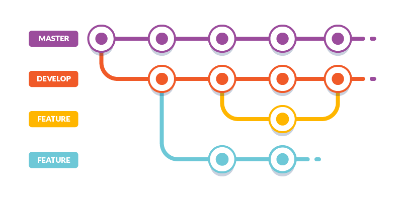

Flujo de trabajo con Git#
Un buen flujo de trabajo en Git te ayudará a mantener tu proyecto organizado, colaborar eficientemente y evitar conflictos.

Flujo básico de trabajo#
El flujo más simple en Git consta de los siguientes pasos:
- Modificar archivos en tu working directory.
- Agregar archivos al staging area con
git add. - Confirmar cambios al repositorio con
git commit. - Subir los cambios al remoto con
git push.
Ejemplo paso a paso#
Git Flow#
Git Flow es uno de los modelos de ramificación más populares. Define un conjunto de ramas específicas para diferentes propósitos.
Estructura de ramas#
| Rama | Propósito | Origen | Destino |
|---|---|---|---|
main |
Código en producción | - | - |
develop |
Integración de nuevas funcionalidades | main |
main |
feature/* |
Nuevas funcionalidades | develop |
develop |
release/* |
Preparación de nuevas versiones | develop |
main y develop |
hotfix/* |
Corrección urgente en producción | main |
main y develop |
Diagrama de Git Flow#
gitGraph
commit
branch develop
checkout develop
commit
branch feature/login
checkout feature/login
commit
commit
checkout develop
merge feature/login
branch release/1.0
checkout release/1.0
commit
checkout main
merge release/1.0
checkout develop
merge release/1.0GitHub Flow#
GitHub Flow es un modelo más simple, ideal para proyectos con despliegue continuo.
Pasos del GitHub Flow#
-
Crea una rama desde
main: -
Realiza cambios y commits:
-
Sube la rama al remoto:
-
Abre un Pull Request en GitHub.
-
Revisa y discute los cambios con tu equipo.
-
Mergea a
maincuando esté aprobado. -
Despliega desde
main.
Recomendación
Para proyectos pequeños o medianos, GitHub Flow es generalmente más sencillo y efectivo que Git Flow.
Resolución de conflictos#
Los conflictos ocurren cuando Git no puede fusionar automáticamente los cambios. Esto sucede cuando dos personas modifican las mismas líneas de un archivo.
Ejemplo de conflicto#
Cuando hay un conflicto, verás algo así en el archivo:
Cómo resolverlo#
Importante
Nunca elimines los marcadores sin revisar el contenido. Asegúrate de entender ambas versiones antes de elegir.
Archivo .gitignore#
El archivo .gitignore indica a Git qué archivos NO debe rastrear.
Ejemplo de .gitignore#
Buena práctica
Crea tu .gitignore al inicio del proyecto. Cambiarlo después puede ser complicado si ya hay archivos rastreados.
Buenas prácticas#
Para commits#
- Haz commits pequeños y frecuentes.
- Un commit = un cambio lógico.
- Mensajes claros y en modo imperativo.
- No incluyas archivos generados (binarios, builds).
Para ramas#
- Usa nombres descriptivos:
feature/login,bugfix/header-error. - Mantén las ramas cortas (pocos días).
- Elimina las ramas después de mergear.
Para colaboración#
- Haz
pullantes de empezar a trabajar. - Comunica cambios grandes con tu equipo.
- Revisa los Pull Requests cuidadosamente.
Comparación de flujos#
| Característica | Git Flow | GitHub Flow | Trunk Based |
|---|---|---|---|
| Complejidad | Alta | Baja | Muy baja |
| Despliegue | Por release | Continuo | Continuo |
| Ramas long-lived | Muchas | Solo main |
Solo main |
| Equipo recomendado | Grande | Pequeño/Mediano | Cualquiera |
| Frecuencia de releases | Baja | Alta | Muy alta |
¡Excelente progreso!
Ya conoces los flujos de trabajo más comunes con Git. En la siguiente sección aprenderás más sobre ramas y merges.